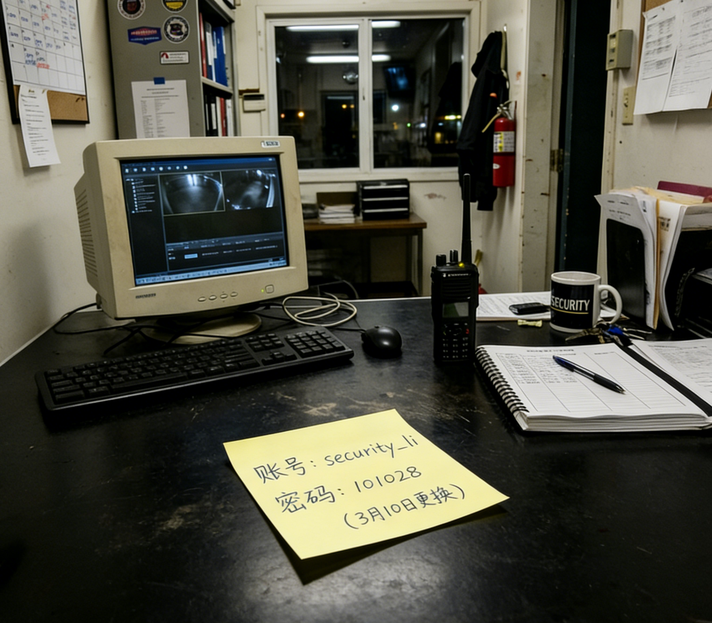

有没有人发现最近刘天清不见了
11月20日之后就不见了，今天已经过去5天了，班里说他请假，但感觉不太对。
他最近在研究什么奇怪的东西，发了一些看不懂的帖子，现在人不见了……
有点怕。
食堂红烧肉今天复活了！！
三楼靠窗口，周二和周五才有，今天是周五！！上午十一点二十开卖，去晚了绝对没有。
上次有人说要去晚了能抢到，结果当场被打脸。
这条帖子就是给你们的福利，自己决定信不信。
第一次进保安室的体验……
哈哈哈今天放学忘带饭卡在教室里了，保安室借了张备用卡。
那个地方真的很乱，桌上贴了一堆便利贴，老李（保安大叔）说那是他记密码的地方……
附一张我偷拍的图，太好笑了（

[📸 保安室照片]
画面：杂乱的桌子，各种本子和设备
桌角的黄色便利贴：
账号：security_li
密码：101028
（别忘了！！）
期中了，有人整理过数学重点吗
函数、导数、三角函数……感觉每个都是重点，根本不知道从哪里下手。
求有缘人分享一下备考思路。
失眠第十一天
闭上眼睛就开始想各种事情，然后天就亮了。
上课的时候又困得要死，形成闭环了。
有没有同病相怜的。
旧实验楼深夜有人？
昨晚大概11点多，我从宿舍看到旧实验楼地下室的窗子透出灯光。
不是路灯，是那种白色日光灯的光，一直亮着没熄。
实验楼不是说整修中禁止进入吗？怎么会有人？
有没有人觉得董老师最近状态不对
感觉这学期开学之后他上课就有点心不在焉，经常看手机，有时候课讲到一半突然发呆。
上周还提前下课了，说是有事情要处理。
不知道是不是我的错觉。
【密】把参数重置到起点
我在校园网论坛上发过一道题。
一个物体沿某轴做了完整的镜像翻转——要把它完整还原到翻转之前，需要做什么操作？
那道题的答案，就是这里的密码。
两个字。
——
hole.lbyz.internal/vault
宿管大妈今天查寝查出执照来了
手电筒照床底，翻行李箱，连充电宝都要检查……
说是上面通知让严查，我们宿舍六个人被罚站了二十分钟。
有没有人知道最近学校为什么突然这么严？
有没有人认识高二（3）班的林小雨
她9月底就突然说回老家了，但我跟她妈妈联系过，她妈妈说完全联系不上她。
她手机也打不通，微信不回，已经两周了。
班主任说她请假了但说不清楚原因。这正常吗？
我妈的图书馆账号被我看到了哈哈哈
我妈在学校图书馆当管理员，手机没锁屏，账号我看到了：lib_admin
密码没看清，不过这个帖子里有人聊过，仔细翻翻。
高三到底有没有尽头
每天5点半起床，晚上11点熄灯，中间全是课和作业。
我有时候会想，如果能暂停一下就好了，什么都不用记，什么都不用想。